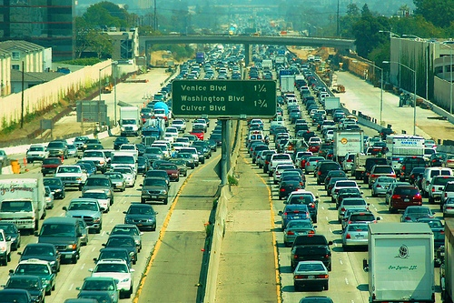

The structures of cities and design impacts how people travel and their level of carbon emissions, and we see this platform as a way to encourage cities to become more environmentally conscious about travel accommodations. On the more individual level, we see the design of our platforms as helpful in inspiring people to make changes to their everyday travel that will in the long run help globally. Committing Carbon is committed to promoting environmental action and change.

A Carbon Footprint is the total calculations of greenhouse gases, carbon dioxide and methane that are generated in day to day actions. The Carbon Footprint is currently the fastest growing & largest issue, making up 60% of humankind's Ecological Footprint. By combating and unifying to work on bringing down these numbers we can successfully work to dismantle the harmful impact we have had on our planet. The Paris Agreement signed in December 2015, unified close to 200 countries across the globe to implement carbon reduction. Working to rewire & create a fossil fuel free world, agreeing to keep global temperatures from rising below 2 degrees Celsius. The goal ultimately is to end fossil fuel use by 2050 switching over to clean Renewable Energy.
To put it simply we need change to continue to occur to continue living on this amazing planet we call home. In order to decrease our overall impact we must unify and collaborate before even more irreversible damage is done. was designed to accommodate each state individually, focusing on what they need to do to reach a lower Carbon Footprint and overall impact. We recognize certain lifestyles must be led a certain way, but small change as well as education can go a long way. By tracking our lifestyles with the developed “Point System” and visually watching state by state our impacts we hope to be as accessible as possible.